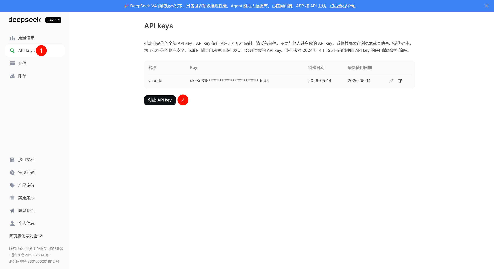
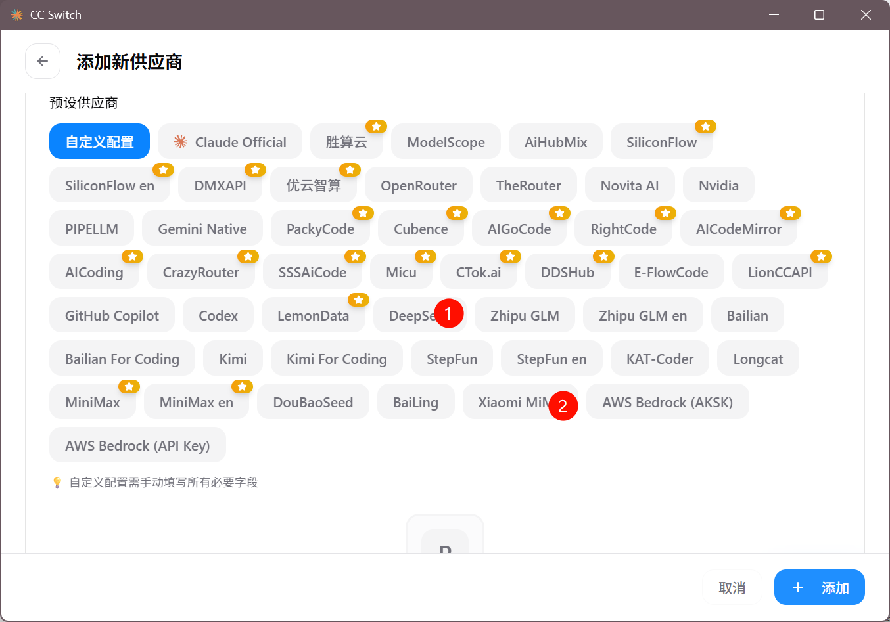
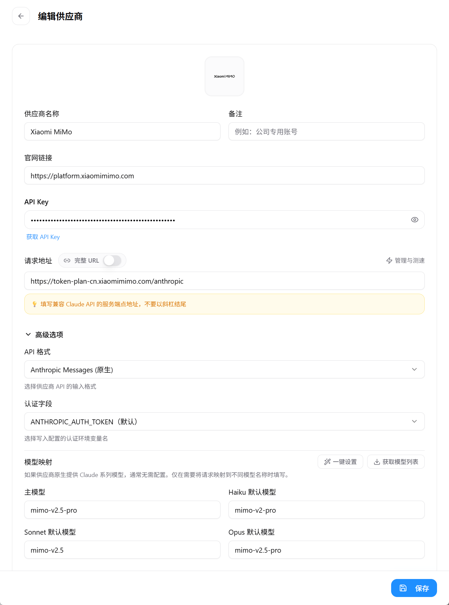
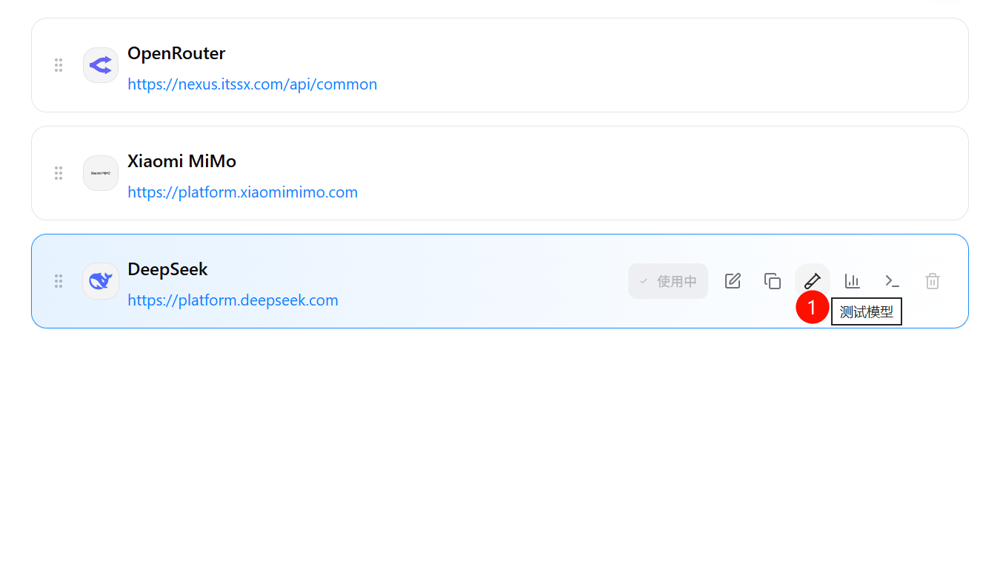
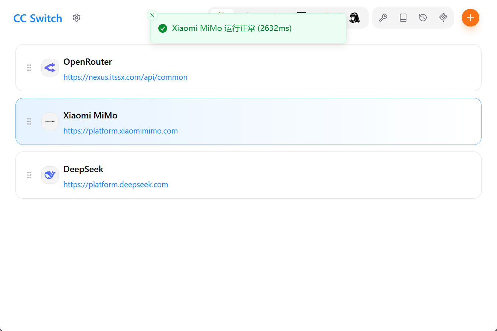
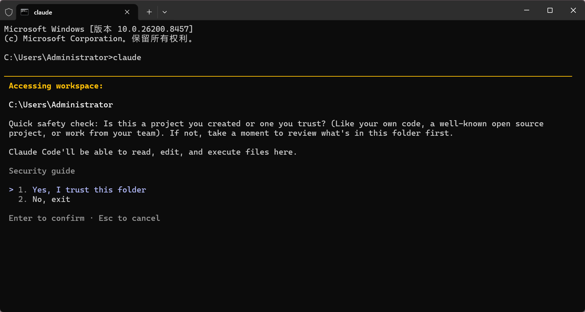
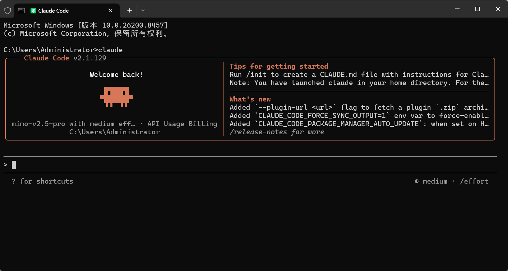
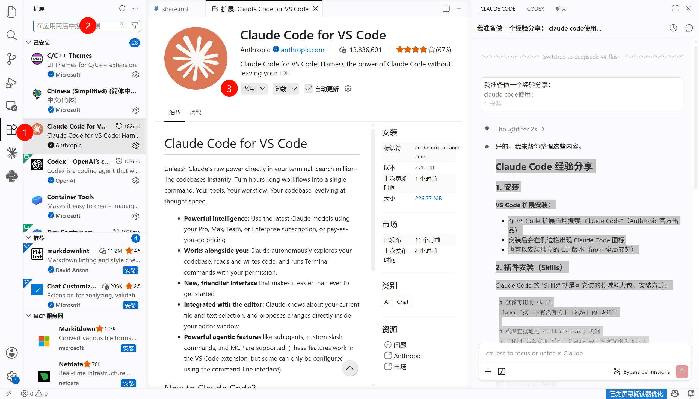

从零开始配置 AI 编程助手，让 Claude 成为你的编码搭档
Claude Code 本身免费，但需要一个兼容 Anthropic API 的 Key 来驱动。推荐以下两个平台。

三步搞定安装，全程只需一条命令。
Win + X 选择 终端（管理员）），复制以下命令粘贴并回车npm install -g claude-code
CC Switch 是一个可视化管理 Claude Code 模型配置的工具，告别手动编辑配置文件。

| 项目 | 值 |
|---|---|
| Base URL | https://token-plan-cn.xiaomimimo.com/anthropic |
| 可用模型 | mimo-v2.5-pro mimo-v2-pro mimo-v2.5 |

| 项目 | 值 |
|---|---|
| Base URL | https://api.deepseek.com/anthropic |
| 可用模型 | deepseek-v4-flash deepseek-v4-pro[1m] |
配置完成后，确认一切正常工作。


Win + R，输入 cmd 回车
claude 或 claude code，选择 yes
在你熟悉的编辑器中直接使用 Claude Code。
Ctrl + Shift + X），搜索 Claude Code（Anthropic 官方出品），点击安装

Chinese 安装中文语言包，安装后重启生效
Skills 是 Claude Code 的插件系统，赋予它搜索论文、处理 PDF、发送邮件等额外能力。
一个 Skill 本质上是一个 Markdown 文件（.md），包含三个核心要素：
描述何时应该调用这个 Skill
告诉 Claude 具体该怎么做
可能需要额外的 API 或 CLI 工具
/install-skill <skill名称>
或者通过 Skill 商店搜索并安装可用的 Skills。
用 / 前缀直接触发特定 Skill
用自然语言描述需求，Claude 自动匹配最合适的 Skill
/ 可以查看当前已安装的所有 Skills 列表
| Skill | 用途 | 类型 |
|---|---|---|
tavily-search |
AI 优化的网页搜索 | 搜索 |
openalex-paper-search |
学术论文检索 | 学术 |
pdf |
PDF 文件读取与生成 | 文档 |
claude-api |
Claude API 开发辅助 | 开发 |
simplify |
代码审查与优化 | 审查 |
一些能让你用得更顺手的小技巧。
直接告诉它即可，偏好会保存下来，后续对话自动生效。
在终端或 VS Code 中直接用自然语言描述需求，Claude 自动理解上下文
Claude Code 会自动读取当前项目结构和代码，无需手动解释项目背景
进入 Claude Code 的完整学习生态。从基础概念到高级实战，助你彻底通关 AI 辅助开发。
解析程序之间对话的桥梁。零基础理解 API 基础知识、Token 计费原理与 Key 托管，为 AI 编程打下扎实的网络基石。
用自然语言掌控代码！Andrej Karpathy 推崇的 Vibe Coding 时代核心利器，深度解析终端与编辑器集成的自动感知与敏捷开发流程。
真实学术场景演练。看 Claude Code 如何在数分钟内将一个 Markdown/Word 格式论文无损转为符合 IEEE 等顶级期刊标准格式的 LaTeX 源代码。
从 /斜杠命令、@文件引用、键盘快捷键到 MCP 服务、Hooks 自动化——掌握 Claude Code 的全部命令与高级技巧，让你的 Vibe Coding 体验如丝般顺滑。
查看完整攻略 →